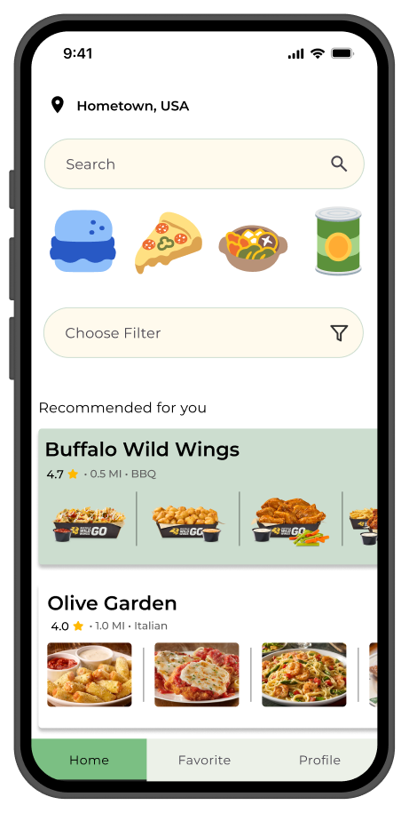
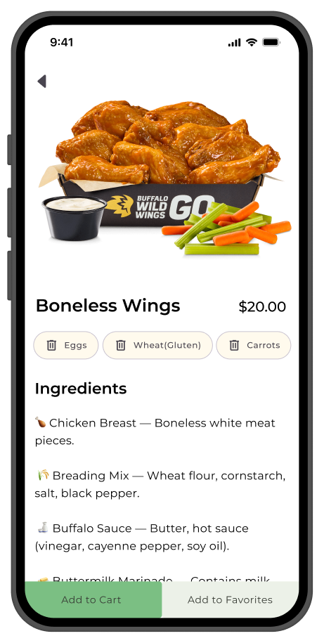
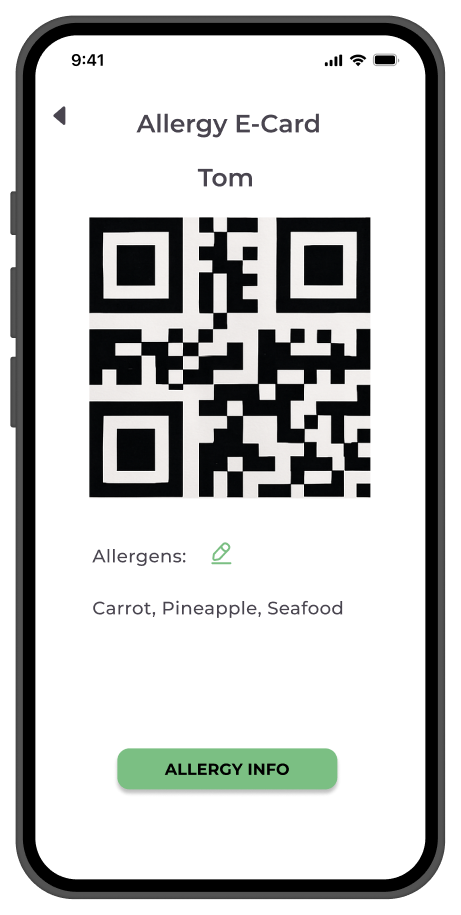
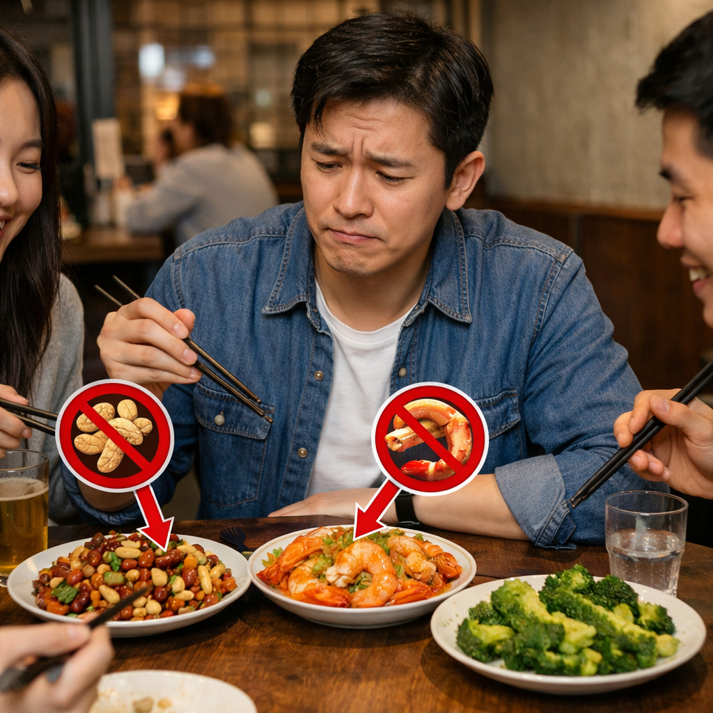
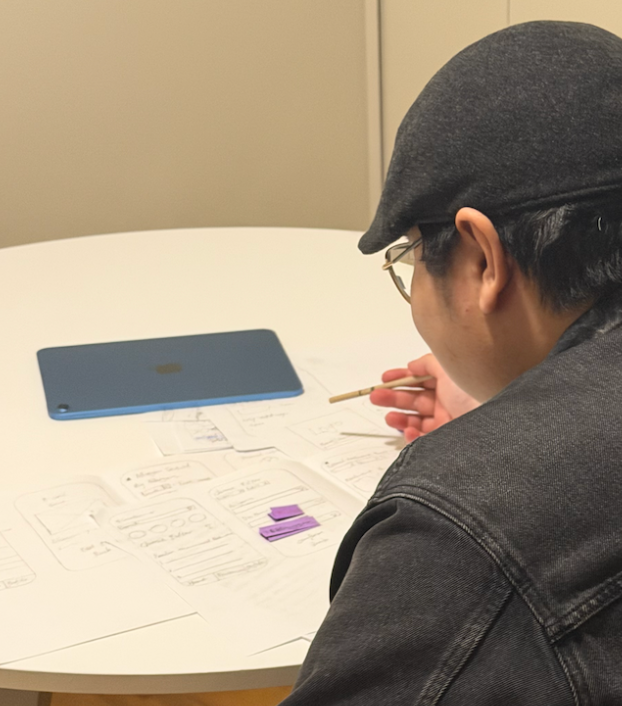

SafeEats
帮助食物过敏用户在外出就餐时做出更安全、更有信心的决策
SafeEats 是一款面向食物过敏人群的移动应用，旨在通过信息筛选与结构化呈现， 帮助用户在餐厅选择与菜品决策过程中降低风险，并提升整体就餐体验。



问题定义
对于食物过敏用户而言，外出就餐过程中普遍存在较高的不确定性与风险。菜单缺乏清晰的过敏原标识、食材信息不完整，以及沟通中的信息偏差，使用户难以判断食物安全性，从而增加决策压力。本研究聚焦于用户在真实就餐场景中的信息获取与决策过程，旨在理解用户如何获取、筛选并理解相关信息，以及哪些关键因素会影响其风险判断与选择。

目标
帮助用户在就餐过程中更快识别安全信息，并做出更有信心的决策。
信息可筛选
提供明确的过敏原筛选与餐厅过滤机制，减少选择范围。
信息易理解
优化信息结构与表达方式，降低用户认知负担。
支持决策
在关键节点提供清晰提示，帮助用户快速做出判断。
研究
在项目初期，我们通过用户访谈与问卷收集，了解食物过敏人群在外出就餐中的真实体验与痛点。 同时，在后续设计过程中结合可用性测试，不断验证设计决策的有效性。
研究结果显示，用户在就餐过程中主要面临信息不透明、决策成本高以及沟通不确定性等问题。 此外，用户更关注的是“如何避免风险”，而不是“如何获得推荐”，这对后续设计方向产生了重要影响。
关键发现
访谈与问卷总结关键洞察
用户在高风险决策场景中，更关注信息的可靠性与可理解性，而非信息数量本身。
可靠信息比更多信息更重要
用户真正缺少的不是信息总量，而是可被信任、可直接用于决策的信息。
风险规避优先于便利性
在高风险情境下，用户首先关注的是“是否安全”，而不是“是否方便”。
信息结构影响理解效率
清晰的信息层级与直观筛选方式可以显著降低认知负担。
设计过程
信息架构
基于研究中发现用户在决策过程中面临较高的信息不透明与认知负担问题，我们重新梳理了信息结构，将复杂信息拆分为用户易于理解的模块，并围绕“降低风险感”的决策路径进行重组。
具体而言，我们引入了基于过敏原、距离及餐厅类型的筛选机制，帮助用户快速缩小选择范围，从而降低信息处理成本与决策不确定性。
用户流程
结合用户在实际就餐场景中的行为，我们构建了从“筛选餐厅—查看菜品—获取关键信息—完成决策”的核心路径。在设计过程中，我们重点减少用户在信息确认环节中的重复操作，并优化关键路径节点，使用户能够以更少的步骤完成高风险决策任务，从而提升整体决策效率与信心。

线框图
在低保真阶段，我们围绕“降低认知负担与提升信息可理解性”构建初步界面结构，重点优化筛选逻辑与信息层级，使关键决策信息能够被快速识别。
初步设计完成后，我们通过可用性测试对核心任务路径进行了验证，并发现了一些影响用户理解与操作的问题。
- 简化筛选入口与信息展示结构
- 提高信息可读性与理解效率
- 优化关键操作路径，减少不必要步骤
.png)
可用性测试与优化
我们通过可用性测试验证用户在筛选餐厅、查看菜品以及更新过敏信息等核心任务中的体验，并提炼出影响理解与决策效率的关键问题，作为后续迭代优化的依据。
注册流程复杂，用户负担较高
用户需要在初始阶段填写较多信息，流程缺乏清晰引导，增加了进入产品的门槛。
简化注册流程与登录方式
减少非必要字段，并引入更便捷的登录方式，将过敏信息填写延后，以降低初始认知负担。
筛选逻辑与信息结构不够清晰
用户难以区分搜索与筛选功能，筛选流程本身也较复杂，影响信息获取效率。
重构筛选入口与信息结构
将筛选入口简化为更直观的形式，并支持条件复用与排序功能，提升筛选效率与可理解性。
菜品信息难以快速理解
页面信息存在冗余，用户难以快速识别真正影响安全判断的过敏原信息。
简化信息呈现，突出关键内容
聚焦展示食材与过敏原信息，减少无关内容干扰，帮助用户更快完成安全判断。

设计迭代与最终成果
基于可用性测试结果，我们围绕信息表达、交互流程与功能结构进行了重点优化，使用户能够更高效地完成关键决策任务。
优化信息表达
重新设计关键标签与信息层级，使核心信息更加直观易读，降低理解成本。
重构核心流程
拆分注册与信息输入流程，减少不必要步骤，从而降低用户初始认知负担。
优化功能结构
合并重复功能入口，并统一交互逻辑，使整体使用路径更加清晰且一致。
通过结构与流程优化，用户能够更快速识别风险信息，并在更少步骤下完成安全决策。
反思
这个项目让我更清楚地认识到，在高风险决策场景中，设计的价值不在于提供更多信息，而在于帮助用户更快理解关键信息并做出判断。
通过研究与可用性测试，我进一步验证了信息表达清晰度、交互一致性以及任务流程简化对用户体验的重要性，也更加理解了迭代在设计过程中的价值。
未来，我希望继续提升自己在复杂信息场景下的设计能力，进一步探索如何通过更清晰的信息结构与更可靠的交互支持，帮助用户完成更有信心的决策。